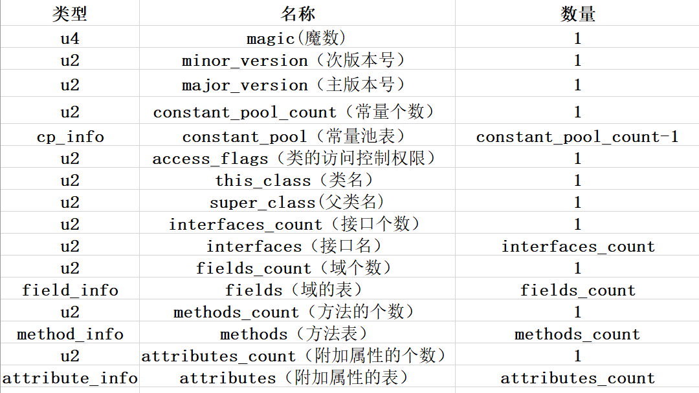
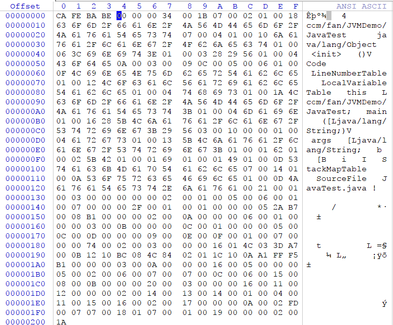
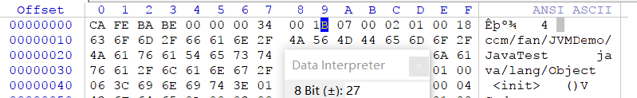
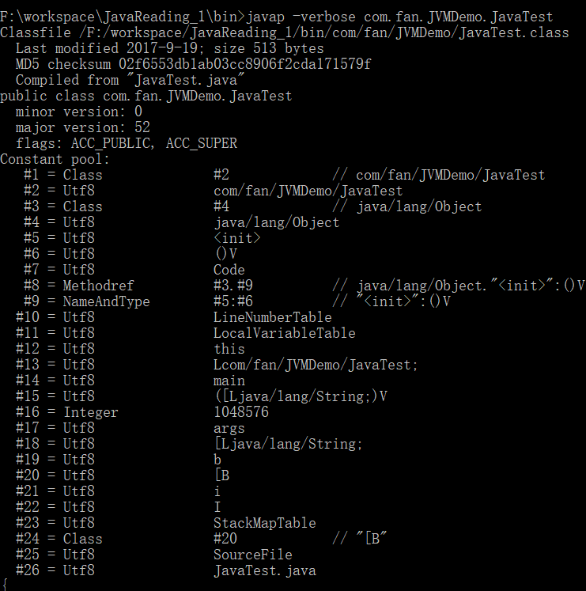
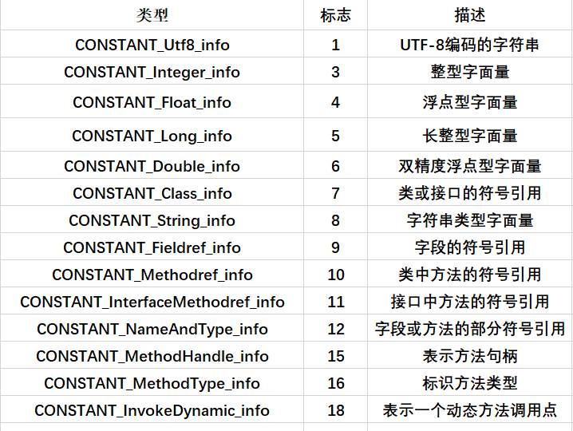
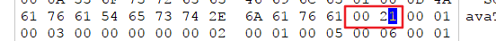
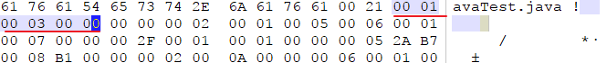
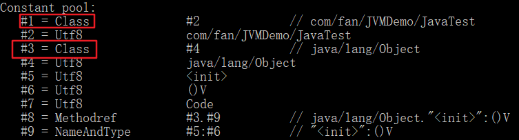
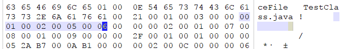
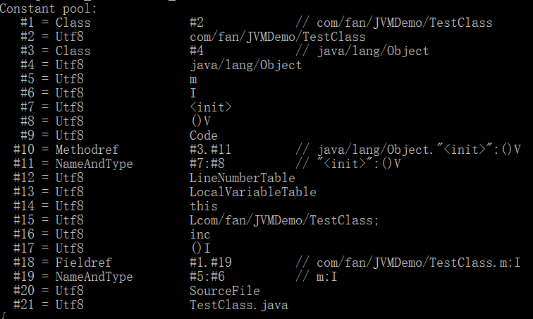

概述
本文章参考周志明的【深入理解Java虚拟机】
代码编译的结果从本地机器码转变为字节码，是存储格式发展的一小步，却是编程语言发展的一大步。
提示：如果想系统的了解java虚拟机，我建议买一本周志明写的【深入理解Java虚拟机】来看看，通俗易懂，一本圣经。
Class类文件结构
Class文件是一组以8为字节为基础单位的二进制流，各个数据项目严格按照顺序紧凑的排列在Class文件之中，中间没有添加任何分隔符，这使得整个Class文件中存储的内容几乎全部是程序运行的必要数据，没有空隙存在。
根据Java虚拟机规范规定，Class文件格式采用一种类似于C语言结构体的伪结构来存储数据的，这种微结构中只有两种数据类型：无符号数和表。
1.无符号数
无符号数属于基本数据类型，主要可以用来描述数字、索引符号、数量值或者按照UTF-8编码构成的字符串值，大小使用u1、u2、u4、u8分别表示1字节、2字节、4字节和8字节。
2.表
表是由多个无符号数或者其他表作为数据项构成的复合数据类型，所有的表都习惯以“_info” 结尾。表是用于描述有层次关系的复合结构的数据，整个Class文件本质就是一张表，它是由图1所示的数据项构成。

在class文件中，主要分为魔数、Class文件的版本号、常量池、访问标志、类索引（还包括父类索引和接口索引集合）、字段表集合、方法表集合、属性表集合。
无论是无符号数还是表，当需要描述同一类型但数量不定的多个数据时，经常会使用一个前置的容量计数器加若干个连续的数据项的形式，这时称这一系列连续的某一类型的数据为某一类型数据的集合。
魔数与Class文件的版本
每个Class文件的头4个字节成为魔数（Magic Number），它唯一作用是确定这个文件是否为一个能被虚拟机接收的Class文件。很多文件存储标准都使用魔数进行身份的识别，如图片格式 gif或jpeg等在文件头都有魔数。使用魔数而不是扩展名进行身份识别主要基于安全考虑，因为扩展名可以所以的改动。
文件格式的制定者可以自由选择魔数值，只要这个魔数值还没有被广泛采用过同时又不会引起混乱即可。
Class文件的魔数是0xCAFEBABE。紧接着魔数的4个字节存储的是Class文件的版本号：第5和第6个字节是次版本号（Minor Version），第7和第8个字节是主版本号（Major Version）。
示例代码：
1 | package com.fan.JVMDemo; |
下图显示的是使用十六进制编辑器WinHex打开的Class文件的结果。

可以看到开头的4个字节的16进制表示是0xCAFEBABE，代表此版本号的是第5和第6个字节值为0x0000，主版本号是0x0034，也即是10进制的52。
这个的版本号是随着jdk版本的不同而表示不同的版本范围的。Java的版本号是从45开始的。如果Class文件的版本号超过虚拟机版本，将被拒绝执行。
0X0034（对应十进制的52）：JDK1.8
0X0033（对应十进制的51）：JDK1.7
0X0032（对应十进制的50）：JDK1.6
0X0031（对应十进制的49）：JDK1.5
0X0030（对应十进制的48）：JDK1.4
0X002F（对应十进制的47）：JDK1.3
0X002E（对应十进制的46）：JDK1.2
常量池
紧接着魔数与版本号之后的是常量池入口，常量池简单理解为class文件的资源从库，它是Class文件结构中与其它项目关联最多的数据类型，也是占用Class文件空间最大的数据项目之一，同时它还是在文件中第一个出现的表类型数据项目。
由于常量池中常量的数量是不固定的，所以在常量池的入口需要放置一项u2类型的数据，代表常量池容量计数值(constant_pool_count)。这个容量计数器从1开始计数。
如下图中，常量池容量（十六进制0x001B），即使十进制的27，，这就代表常量池中有26项常量，索引值范围为1-26.

这样做的目的是有特殊考虑的， 第0项腾出来满足后面某些指向常量池的索引值的数据在特定情况下需要表达”不引用任何一个常量池项目”的意思，这种情况就可以把索引值置为0来表示。Class文件结构中只有常量池的容量计数器是从1开始的，对与其它集合类型，包括接口索引集合，字段表集合，方法表集合等容量计数都是从0开始。
使用Javap命令输出常量表，如下：

从表中可以发现总共有26个，也就是说常量池容量为26。
常量池之中主要存放两大类常量：
1).字面量: 比较接近于Java语言层面的常量概念，如文本字符串、被声明为final的常量值等
2).符号引用: 属于编译原理方面的概念，包括了下面三类常量:
①.类和接口的全限定名
②.字段的名称和描述符
③.方法的名称和描述符
Java代码在进行Java编译的时候，并不像C和C++那样有”连接”这一步骤，而是在虚拟机加载Class文件的时候进行动态连接。也就是说，在Class文件中不会保存各个方法和字段的最终内存布局信息，因此这些字段和方法的符号引用不经过转换的话是无法被虚拟机使用的。当虚拟机运行时，需要从常量池获得对应的符号引用，再在类创建时或运行时解析并翻译到具体的内存地址之中。
常量池中每一项常量都是一个表，在jdk1.7之前共有11中结构各不相同的表结构数据，之后又增加了3中。
这14中都有一个共同的特点，就是表开始的第一位是一个u1类型的标志位，代表当前这个属性属于那种类型常量。具体如下图所示：

符号引用与直接引用的关联
符号引用是一组符号，用来描述所引用的目标，符号是以任何形式存在的字面量。对于符号引用Java虚拟机并没有严格的限制。规定只需要使用的时候能够无歧义定位到目标就可以。常量池存在于Class文件中，而Class文件是必须首先通过Java虚拟机的类加载机制加载到内存中（确切的说是方法区这个内存区域，回顾一下，方法区存放的主要是对象的实例，这个Class文件是虚拟机对外接受访问的接口）。符号引用属于常量池中的内容，那么是不是说符号引用的目标已经加载到内存中了呢？答案是否定的，因为符号引用与虚拟机的内存布局无关，符号引用的目标并不一定已经加载到内存中了。
直接引用可以是直接指向引用目标的指针、相对偏移量或者是一个能够间接定位到目标的句柄。直接引用是和虚拟机的内存布局有关的，同一个符号引用在不同的虚拟机上翻译的直接引用一般是不同的。如果有了直接引用，那么引用的目标必定是存在内存中的。
访问标志
在常量池结束之后，紧接着的两个字节代表访问标志（access_flags）,这个标志用于识别一些类或者接口层次的访问信息。具体的标志位以及标志的含义见下表：
| 标志名称 | 标志值 | 含义 |
|---|---|---|
| ACC_PUBLIC | 0x0001 | 是否为public类型 |
| ACC_FINAL | 0x0010 | 是否被声明为final，只有类可设置 |
| ACC_SUPER | 0x0020 | 是否允许使用invokespecial字节码指令的新语意，invokespecial指令的语意在JDK1.2发生过改变，为了区别这条指令使用哪种语意，JDK1.0.2之后编译出来的类的这个标志必须为真 |
| ACC_INTERFACE | 0x0200 | 标识这是一个接口 |
| ACC_ABSTRACT | 0x0400 | 是否为abstract类型，对于接口和抽象类，此标志为真，其它类为假 |
| ACC_SYNTHETIC | 0x1000 | 标识别这个类并非由用户代码产生 |
| ACC_ANNOTATION | 0x2000 | 标识这是一个注解 |
| ACC_ENUM | 0x4000 | 标识这是一个枚举 |
access_flags一共有16个标志位可以使用，当前只定义了其中8个（JDK1.5增加后面3种），没有使用到标志位一律为0。仍以开始代码为例，类JavaTest为一个普通的类，不是借口，枚举或者注解，被public修饰但没有声明final和abstract，用的是JDK1.2之后的编译器进行编译的。所以ACC_PUBLIC，ACC_SUPER标志应当为真，其他为假。所以access_flags的值为：0x0001|0x0020 = 0x0021。结果如下图：

类索引、父类索引与接口索引集合
类索引（this_class）和父类索引（super_class）都是一个u2类型的数据，而借口索引集合（interfaces）是一组u2类型的数据的集合，Class文件中由这三项数据来确定这个类的继承关系。
类索引(this_class)，用于确定这个类的全限定名，占2字节，父类索引(super_class)，用于确定这个类父类的全限定名（Java语言不允许多重继承，故父类索引只有一个。除了java.lang.Object类之外所有类都有父类，故除了java.lang.Object类之外，所有类该字段值都不为0），占2字节。接口索引集合就用来描述这个类实现了哪些接口，这些被实现的接口将按implements语句后的接口顺序从左到右排列在接口索引集合中。
this_class、super_class与interfaces按顺序排列在访问标志之后，它们中保存的索引值均指向常量池中一个CONSTANT_Class_info类型的常量，通过这个常量中保存的索引值可以找到定义在CONSTANT_Utf8_info类型的常量中的全限定名字符串。
类索引，父类索引与接口索引的内容如下图所示：

测试类对应的this_class的值为0x0001，即常量池中第1个常量，super_class的值为0x0003，即常量池中的第3个常量，interfaces_counts的值为0x0000，故接口索引集合大小为0.

字段表集合
字段表用于描述接口或者类中声明的变量。字段（field）包括类级变量以及实例级变量，但不包括在方法内部声明的变量。
在Java中一般通过如下几项描述一个字段：字段作用域（public、protected、private修饰符）、是类级别变量还是实例级别变量（static修饰符）、可变性（final修饰符）、并发可见性（volatile修饰符）、可序列化与否（transient修饰符）、字段数据类型（基本类型、对象、数组）以及字段名称。在字段表中，变量修饰符使用标志位表示，字段数据类型和字段名称则引用常量池中常量表示，字段表格式如下表所示：
| 类型 | 名称 | 数量 |
|---|---|---|
| u2 | access_flags | 1 |
| u2 | name_index | 1 |
| u2 | descriptor_index | 1 |
| u2 | attributes_count | 1 |
| attribute_info | attributes | attributes_count |
字段表里的字段修饰符放在access_flags中，占2个字节，与类中的访问标志（access_flags）十分相似，都是u2的数据类型，其中可以设置的标志位和含义见表：
| 标志名称 | 标志值 | 含义 |
|---|---|---|
| ACC_PUBLIC | 0x0001 | 字段是否为public |
| ACC_PRIVATE | 0x0002 | 字段是否为private |
| ACC_PROTECTED | 0x0004 | 字段是否为protected |
| ACC_STATIC | 0x0008 | 字段是否为static |
| ACC_FINAL | 0x0010 | 字段是否为final |
| ACC_VOLATILE | 0x0040 | 字段是否为volatile |
| ACC_TRANSIENT | 0x0080 | 字段是否为transient |
| ACC_SYNTHETIC | 0x1000 | 字段是否为编译器自动产生 |
| ACC_ENUM | 0x4000 | 字段是否为enum |
当然实际上，ACC_PUBLIC、ACC_PRIVATE和ACC_PROTECTED这3个标志只能选择一个，接口中的字段必须有ACC_PUBLIC、ACC_STATIC、ACC_FINAL标志，Class文件对此并无规定，这些都是java语言所要求的。
跟随access_flags标志的是两项索引值：name_index和descriptor_index。他们都是对常量池的引用，分别代表着字段的简单名称以及字段和方法的描述符。
简单名称，描述符的解释：
简单名称：是指没有类型和参数修饰的方法或者字段名称，这一个类的main（）方法的简单名称时main。
描述符：作用是用来描述字段的数据类型，方法的参数列表（包括数量，类型以及顺序）和返回值。根据描述符规则，基本数据类型以及代表无返回值的void类型都用一个大写字符表示，而对象类型则用字符L加对象的权限定名来表示，如下表：
| 标识字符 | 含义 |
|---|---|
| B | 基本类型byte |
| C | 基本类型char |
| D | 基本类型double |
| F | 基本类型float |
| I | 基本类型int |
| J | 基本类型long |
| S | 基本类型short |
| Z | 基本类型boolean |
| V | 基本类型void |
| L | 对象类型，如Ljava/lang/Object |
对于数组类型，每一维度将使用一个前置的“[” 字符来描述，如一个定义为“java.lang.String[ ][ ]”类型的二维数组，将被记录为：”[[Ljava/lang/String” ，一个整形数组“int[]“将被记录为”[I“。
用描述符描述方法时，按照先参数列表，后返回值的顺序描述，参数列表按照参数的严格顺序放在一组小括号“（）”之内，如方法void inc() 的描述符是“（）V”，方法java.lang.String toString（）的描述符为“（）Ljava/lang/String“。
开始的代码案例不能有效说明字段集合，所以下面我们以如下的代码来说明：
代码二：
1 | package com.fan.JVMDemo; |
字段表结构实例如下图：

从图中可以看到，fields_count的值为0x0001，说明这个类只有一个字段表数据，接下来是access_flags表示，值为0x0002，代表private修饰符，代表字段名称的name_index的值为0x0005,从代码清单第五项常量是m，代表字段描述符的值为0
x0006，指向常量池的字符串“I”，根据这些信息我们可以推算字段为“private int m”

字段表集合中不会列出从父类或父接口中继承的字段，但是可能列出原本Java代码之中不存在的字段，如：内部类为了保持对外部类的访问性，自动添加指向外部类实例的字段.
Java语言中字段是不能重载的，2个字段无论数据类型、修饰符是否相同，都不能使用相同的名称；但是对于字节码，只要字段描述符不同，字段重名就是合法的.
方法表集合
方法表的结构如同字段表一样，依次包括了访问标志（access_flags）,名称索引（name_index），描述符索引（descriptor_index），属性表集合（attributes）几项；如下表所示：
| 类型 | 名称 | 数量 |
|---|---|---|
| u2 | access_flags | 1 |
| u2 | name_index | 1 |
| u2 | descriptor_index | 1 |
| u2 | attributes_count | 1 |
| attribute_info | attributes | attributes_count |
由于ACC_VOLATILE标志和ACC_TRANSIENT标志不能修饰方法，所以access_flags中不包含这两项，同时增加ACC_SYNCHRONIZED标志、ACC_NATIVE标志、ACC_STRICTFP标志和ACC_ABSTRACT标志。

access_flags为0x0001，即public；name_index为0x0007，即常量池中第7个常量；descriptor_index为0x0008，即常量池中第8个常量， 接下来2个字节为属性计数器，其值为0x0001，说明这个方法的属性表集合中有一个属性（详细说明见后面“八、属性表集合”）， 属性名称为接下来2位0x0009，指向常量池中第9个常量：Code。
在Java语言中，重载一个方法除了要求和原方法拥有相同的简单名称外，还要求必须拥有一个与原方法不同的特征签名，由于特征签名不包含返回值，故Java语言中不能仅仅依靠返回值的不同对一个已有的方法重载；但是在Class文件格式中，特征签名即为方法描述符，只要是描述符不完全相同的2个方法也可以合法共存，即2个除了返回值不同之外完全相同的方法在Class文件中也可以合法共存
属性表集合
属性表在Class文件，字段表，方法表都可以携带自己的表集合，以用来描述某些场景专有的信息。
与Class文件中其他的数据项目要求严格的顺序，长度和内容不同，属性表集合的限制稍微宽松了一些，不在要求各个属性表具有严格顺序，并且只要不与已有属性名重复，任何人实现的编译器都可以想属性表中写入自己定义的信息，java虚拟机运行时会忽略掉它不认识的属性。
为了能正确解析Class文件，虚拟机规范中预定义了虚拟机实现必须能够识别的9项属性（预定义属性已经增加到21项），如下表：
| 属性名称 | 使用位置 | 含义 |
|---|---|---|
| Code | 方法表 | Java代码编译成的字节码指令 |
| ConstantValue | 字段表 | final关键字定义的常量值 |
| Deprecated | 类文件、字段表、方法表 | 被声明为deprecated的方法和字段 |
| Exceptions | 方法表 | 方法抛出的异常 |
| InnerClasses | 类文件 | 内部类列表 |
| LineNumberTale | Code属性 | Java源码的行号与字节码指令的对应关系 |
| LocalVariableTable | Code属性 | 方法的局部变量描述 |
| SourceFile | 类文件 | 源文件名称 |
| Synthetic | 类文件、方法表、字段表 | 标识方法或字段是由编译器自动生成的 |
关于属性表集合这里不再详细介绍，如果想深入理解，请参考周志明的【深入理解java虚拟机】